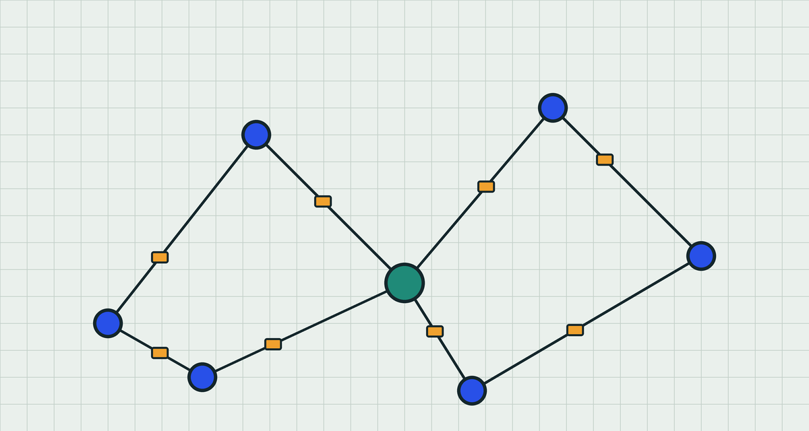
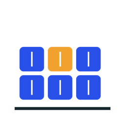
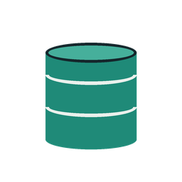
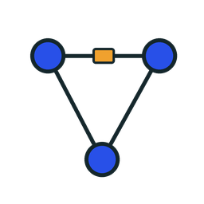

動かないものを直して、手順を残す
Linux、Docker、データベース、ネットワークについての個人メモです。実際に手を動かして確かめたコマンドだけを書いています。


コンテナ
コマンド一つでまっさらなデータベースが立ち上がり、不要になればすぐに捨てられます。
docker run --name pg -e POSTGRES_PASSWORD=secret -p 5432:5432 -d postgres
SQL
変更する前に、まずテーブルの中身を確認します。
SELECT id, name FROM users WHERE active ORDER BY id LIMIT 10;
ネットワーク
プロトコルを一つに絞ると、パケットが読みやすくなります。
sudo tcpdump -i any -n arp